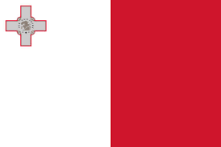
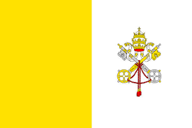

Day 4: Exploring Southern Europe
Introduction to Southern Europe

Southern Europe is known for its sunny weather, beautiful beaches, and rich history.
Southern Europe has many famous landmarks and delicious food.
Big Cities
Some of the biggest cities are Rome, Madrid, and Athens. Each city has lots of interesting things to see and do.
Famous Places
Southern Europe has many famous landmarks, like the Colosseum in Italy, the Acropolis in Greece, and the Alhambra in Spain.
Culture
People in Southern Europe speak languages like Italian, Spanish, and Greek. They celebrate festivals like Carnival in Italy and La Tomatina in Spain, and enjoy foods like pizza and paella.
Heroes
Heroes from Southern Europe include Leonardo da Vinci from Italy, who was a great artist and inventor, and Miguel de Cervantes from Spain, who was a famous writer.
Countries, Their Flags, and Capital Cities in Southern Europe
| Country | Flag | Capital City |
|---|---|---|
| Albania |  |
Tirana |
| Andorra |  |
Andorra la Vella |
| Bosnia and Herzegovina | Sarajevo | |
| Croatia |  |
Zagreb |
| Greece |  |
Athens |
| Italy |  |
Rome |
| Malta |  | Valletta |
| Montenegro |  |
Podgorica |
| North Macedonia | Skopje | |
| Portugal |  |
Lisbon |
| San Marino |  |
San Marino |
| Serbia | Belgrade | |
| Slovenia |  |
Ljubljana |
| Spain |  |
Madrid |
| Vatican City |  | Vatican City |
Andorra

The Pyrenees mountains in Andorra.

Andorra la Vella, the high-altitude capital city.

Sarajevo, the capital city with a rich history.
Croatia

The stunning coastline of Croatia along the Adriatic Sea.
Zagreb, the lively capital city of Croatia.
Greece

Athens, the ancient capital of Greece.
Italy

The majestic Alps mountain range in northern Italy.

Rome, the historic capital city of Italy.
North Macedonia

Lake Ohrid, one of the oldest and deepest lakes in Europe.
Serbia

The Danube River flowing through Serbia.
Slovenia

Lake Bled, a scenic lake with a small island in Slovenia.
Ljubljana, the charming capital city of Slovenia.
Vatican City

St. Peter's Basilica, one of the holiest sites in Vatican City.
Vatican City, the smallest independent state in the world.
Did You Know?
Southern Europe is famous for its Mediterranean climate, which means hot, dry summers and mild, wet winters.
Italy has more UNESCO World Heritage Sites than any other country in the world.
Spain produces nearly half of the world’s olive oil, and it’s a key ingredient in the Mediterranean diet.